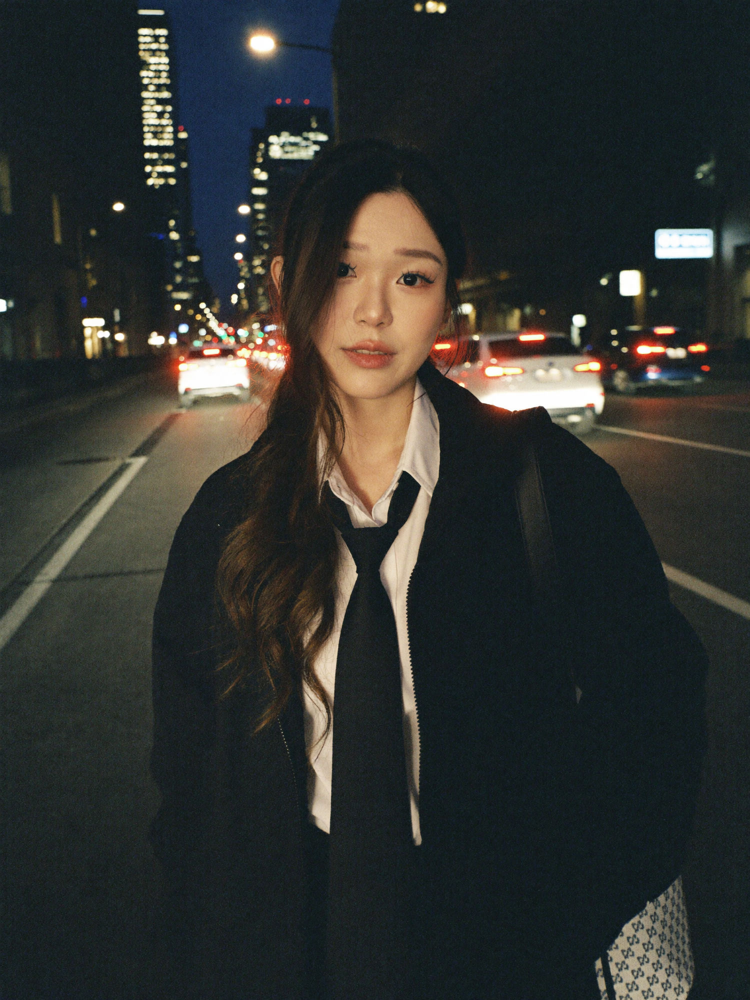
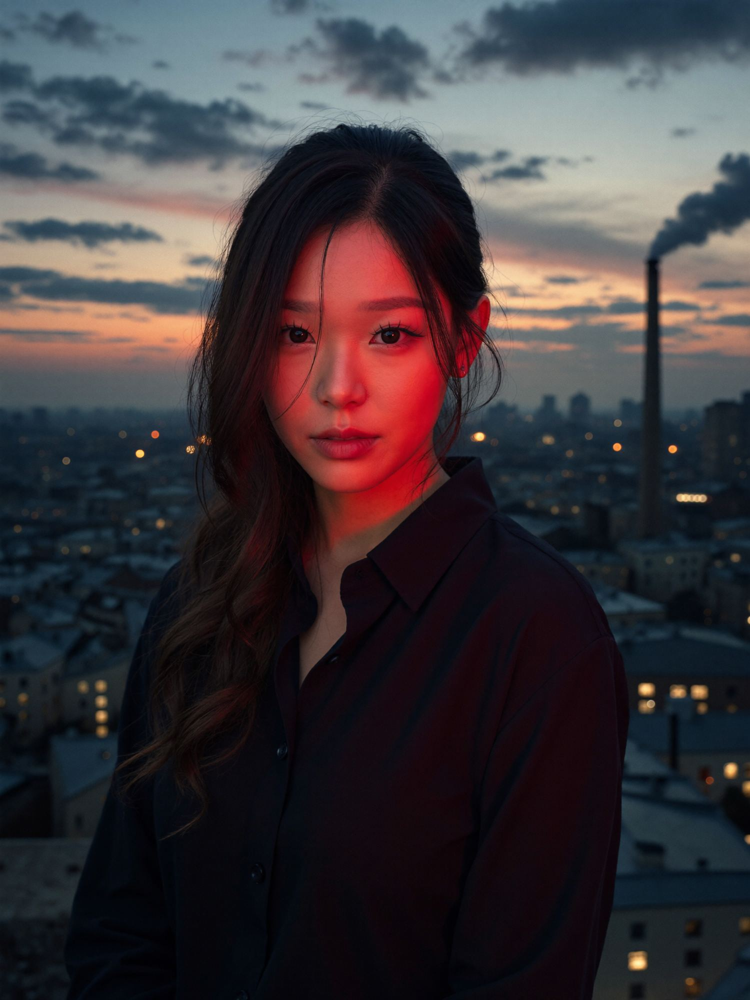
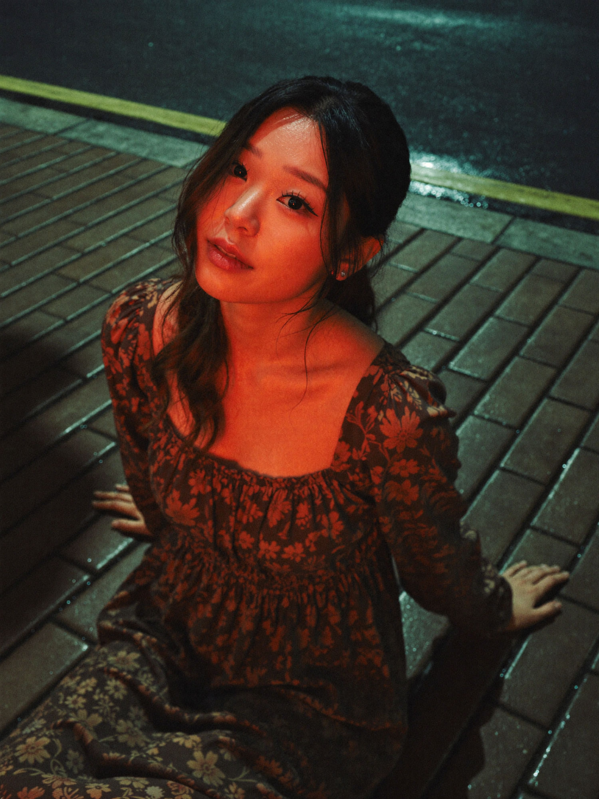
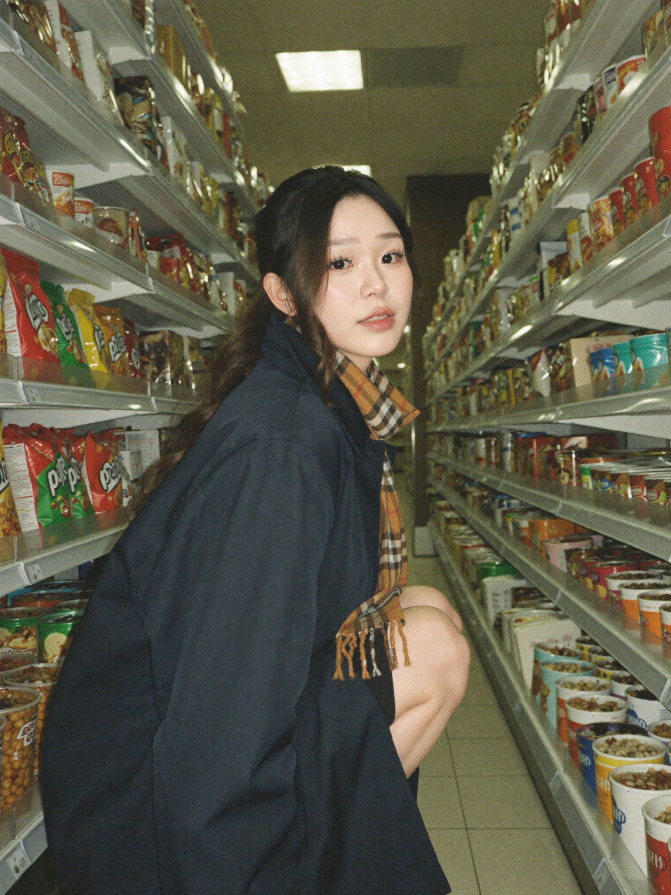
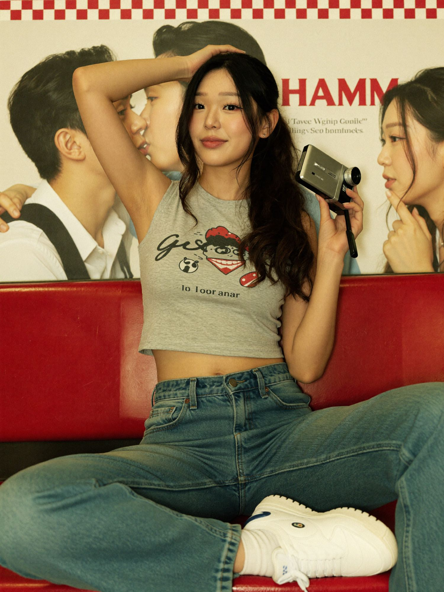
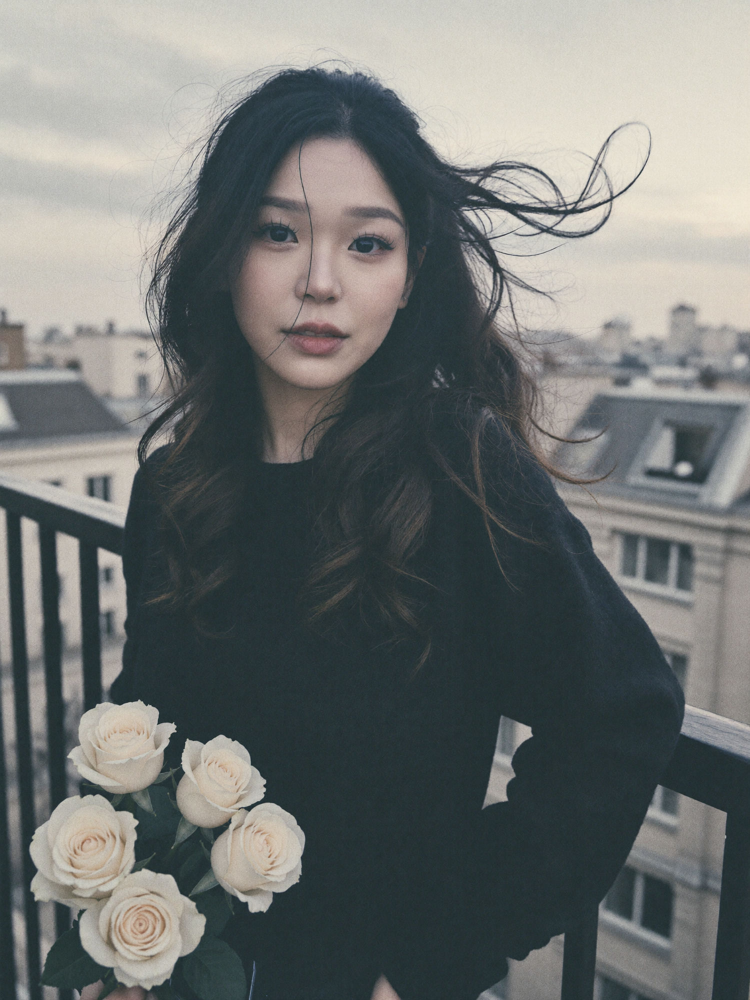

A straight-on medium shot features an Asian woman, 20 years old, standing on a city street at night, with her figure illuminated by the colorful blur of car taillights and street lamps. She wears a white collared shirt paired with a loosely tied black necktie and a textured, oversized black jacket, creating a casual yet formal contrast in her outfit. Her long, dark hair flows loosely, and she carries a patterned bag over her right shoulder. The background is an out-of-focus array of car headlights and atmospheric urban lighting, with light reflecting off the wet pavement and hints of a tall building visible. The image is punctuated by pops of saturated reds, neon blues, and whites from the car lights against a dark, ambient nighttime palette. The photograph is captured on film, showcasing a prominent graininess and muted tones, with the ambient artificial lighting producing harsh rim lights and subtle lens flare effects. The overall mood is pensive and cinematic, blending a sense of solitude with the vibrancy of city nightlife.
A moody, cinematic dusk portrait captures a young Asian woman in her early 20s standing on a rooftop high above a city at blue hour, framed from the waist up. Her long, dark wavy hair is pulled back with loose strands falling across her face, and she gazes directly into the lens with a calm, pensive expression. She wears a dark navy button-up shirt that falls into deep shadow against the cool evening air. A saturated red light rakes across the left side of her face and neck, glowing warm against the cold blue twilight, carving out her features while the rest of her sinks into shadow. Behind her, a softly blurred skyline stretches to the horizon: rooftops dotted with warm window lights, a tall industrial smokestack releasing a slow plume of smoke on the right, and banks of heavy cloud catching the last orange band of sunset above a deepening blue sky. The image has a shallow depth of field, fine film grain, and a rich contrast between teal shadow and red key light, evoking a lonely, contemplative, neo-noir nighttime mood.
A high-angle, close-up shot captures a 20-year-old Asian woman with wet, tousled hair, seated on a patterned brick pavement at night. She wears a loose, dark floral-patterned square neck dress made of thick, opaque material, which covers her torso and lower body while still conveying the glossy sheen of moisture due to being damp. Her pose is relaxed and introspective, leaning back and looking at the camera, with her arms resting by her sides as she gazes slightly upward. The camera is about 1 m away from her, capturing her at a three-quarter angle. The lighting is dramatic and colorful, with intense red and orange hues casting a warm glow over her face, neck, and shoulders, creating stark shadows and strong specular highlights that accentuate the texture of her damp skin and the glossy, wet surface of her hair. In the background, the pavement is slick and reflective, likely from rain, and there is a curb separating the patterned sidewalk from a dark, wet asphalt street with a painted yellow line. The image has a muted color palette dominated by earthy tones in the clothing and the reds/oranges from the lighting, contrasting against the cool, dark slate gray of the pavement. Captured with a wide aperture for shallow depth of field, the image features a cinematic, editorial quality with intentional soft focus and grain, evoking a moody, nocturnal, and intimate atmosphere.
A low-angle, three-quarter length snapshot depicts a young Asian woman, likely in her twenties, with fair skin crouching between two parallel and tightly packed grocery store aisles. She has short, tousled black hair and is dressed in a heavy, oversized navy blue or black coat layered with a thick plaid scarf in mustard yellow and brown tones, with intricate, visible woven texture. She is turning to glance over her shoulder, her legs tucked beneath her in a relaxed but self-contained posture. The aisle displays are filled with snack packages, boxes, and brightly labeled goods in muted colors, their plastic, metallic foil, and reflective wrappers catching subtle specular highlights from the grocery store's soft, cool fluorescent ambient lighting. The muted color palette features faded greens, yellows, warm peaches, and brown hues, contributing to a distinctive warm-cool cast reminiscent of analog 35mm film stock or a digital emulation with gentle atmospheric haze, muted saturation, and visible film grain. The composition employs a slightly wide-angle lens distortion and deep focus throughout the scene, leading the eye along the receding perspective of the floor tiles and the horizontal lines of the shelving, with the subject's ambiguous and introspective gaze setting a pensive, softly enigmatic mood.
A low-angle medium full-body shot of a young Asian woman in her early 20s, posed with one arm resting above her head and the other holding a small vintage camcorder. She is dressed in a heather gray sleeveless crop top with an indistinct graphic print, paired with mid-rise, loose-cut blue denim jeans and white sneakers. Her long, straight black hair frames her face, and she sits casually on a red vinyl booth seat with her legs splayed across it, exuding a relaxed, irreverent posture. The background features a movie poster or print of two people sharing an intimate moment; the visible text reads "HAMM" in bold red, and there's a red-and-white checkerboard pattern above. The lighting is a soft, diffused yellow from overhead indoor sources, subtly contouring her face with gentle shadowing and creating a warm atmosphere. The dominant color palette is primary reds, creamy yellows, faded blue, and muted gray, accented by her natural skin tone. The image composition is tight and slightly off-center, emphasizing a casual, candid effect typical of editorial or lifestyle photography. Likely captured digitally, the image has a clean, sharp quality with minor noise in the shadows and a snapshot documentary feel, enhancing the nostalgic, youthful, and nonchalant mood.
HEX VALUES: ["#466052", "#e1d9b8", "#850f0f", "#0e0a04", "#2b3426", "#efeed5", "#cea55f", "#b98647", "#b2af87", "#8f5f32", "#ae2520", "#888765", "#52472b", "#dfbb7f"]A high-angle, moody, and softly lit photograph captures a young Asian woman seated indoors near a sunlit window. The subject, aged in her late teens or early twenties, possesses long, wavy hair cascading over her shoulders and loosely rests her arms atop her raised, bent knees. She is dressed in a flowy beige top paired with a sheer, vibrant red-orange skirt that glows warmly in the sunlight. Her relaxed, introspective posture and gently closed eyes suggest a moment of quiet reflection. The room includes a vintage sewing machine, scattered papers, and a layered backdrop with wooden drawers and objects on a desk, conveying a nostalgic, artistic atmosphere. The photographer makes use of ethereal, golden sunlight streaming through a smudged window, creating strong flares, volumetric rays, and diffused highlights that envelop the subject and the vintage-styled details. The dominant colors consist of luminous amber, saturated red-orange, and soft neutral browns, with subtle greens and yellows. The image features shallow depth of field, a soft focus, strong bokeh in the highlights, and visible chromatic streaks, most likely captured digitally and enhanced with gentle post-processing for a vintage feel. The overall mood is contemplative, tender, and dreamy, evoking a sense of warm nostalgia and peaceful solitude.
HEX VALUES: ["#f8edf3", "#161914", "#a28f5c", "#0a0c0e", "#766033", "#8f7948", "#b1a174", "#534728", "#323020", "#d5bc93", "#e1d5c9", "#db9c50", "#ce7924"]
A waist-up portrait of a young Asian woman, approximately in her early 20s, is taken outdoors against a softly blurred urban skyline. She stands by a black metal balcony railing, her dark hair tousled and blowing dramatically in gusts of wind, with stray strands creating wide arcs across the pale sky. She clutches a cluster of pale yellow roses, their petals barely in focus in the bottom left of the frame. Her clothing appears dark and form-fitting, possibly a thick sweater, casting her upper torso in deep shadow. The image has a soft, slightly grainy texture with muted colors and a faint sepia tint, suggesting it was captured with a high ISO digital device or film emulation for a nostalgic, analog feel. The daylight is diffused, likely due to overcast weather, causing minimal contrast and lending the whole composition a cool, melancholy, and contemplative mood. The framing is slightly canted, with the figure and the wind-swept hair creating a sense of restless movement.
HEX VALUES: ["#243031", "#2a383a", "#d9d8cc", "#324146", "#e4e2d1", "#cccfc7", "#4b5254", "#606668", "#767676", "#bfbeb6", "#aca9a3", "#9a9896", "#888686", "#d1cbbc"]Build AI systems with me through recorded lessons you can follow at your own pace. Join the waitlist for first access and the founding price.